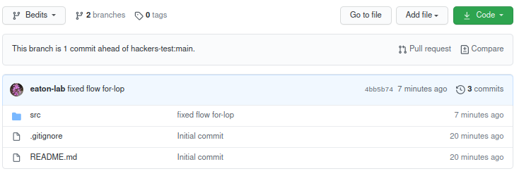
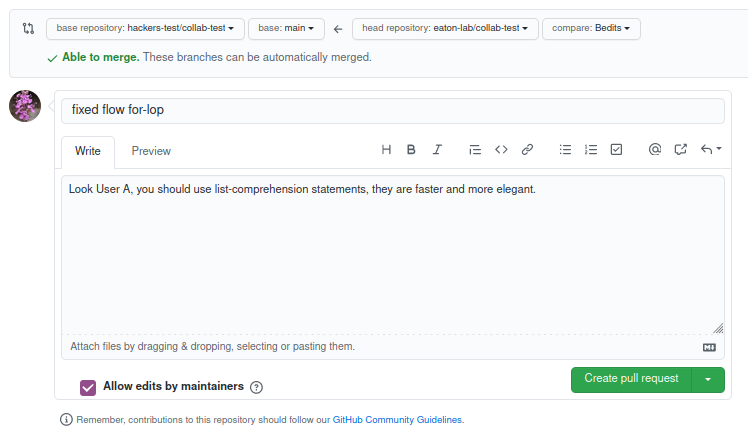
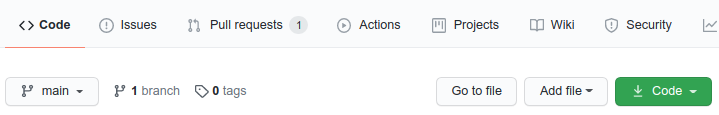
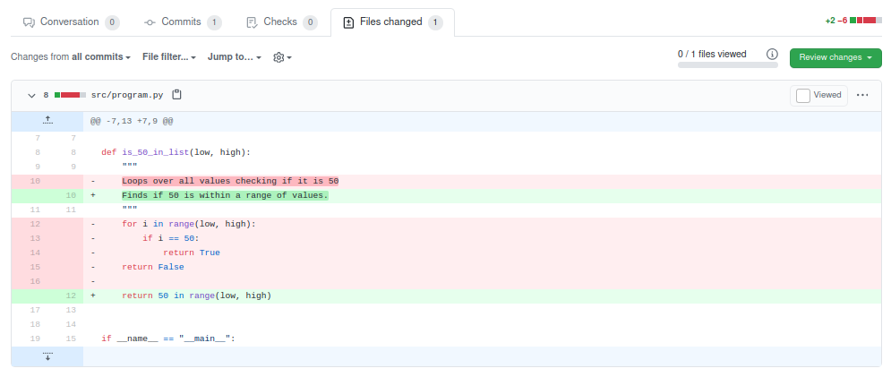

Collaborative coding with git
Table of Contents:
Why collaborate code?
Collaborative coding is an efficient way to write better and faster code. By bouncing ideas off of others you can often find better ways to design and implement code to achieve your goals. Everyone’s style is different, and most coding problems can be solved in numerous possible ways. By working with others you will be exposed to new problems and routines that you may wish to include in your own code in the future.
Collaborative coding is easier today than it has ever been before, thanks to
public code repositories like GitHub, which leverage git to sync code
between local and cloud-based repositories, and to resolve conflicts that
can arise when multiple users are editing code at the same time. So far
we have learned to use these tools as an individual user, where conflicts
are very uncommon. Now we will begin to implement collaborative coding where
you will likely encounter conflicts, so we will need to learn how to resolve
them.
Example workflow
- User A has a repo hosted on GitHub.
- User B forks the repo, commits changes, and pushes to their fork.
- User B opens a pull request from GitHub telling User A about the new changes.
- User A looks at the pull request on GitHub to understand the changes.
- If the changes are very simple:
- User A accepts the request to merge commits into their code, closing the request.
- If the changes are complex, or include a conflict:
- User A can resolve the conflict in GitHub’s editor.
- Or, User A can check out User B’s pull request as a new branch.
- User A resolves conflicts in their editor, or makes changes to the new code.
- User A then merges this branch into main and push commits to origin.
- User A goes back to the pull request on GitHub, which is now identical to main, and closes it.
- If the changes are very simple:
User A has a repo hosted on GitHub
User A created a new repo at https://github.com/UserA/collab-test as a
simple Python package.
User B forks the repo, commits changes, and pushes to their fork
User A is collaborating with User B, who is a better coder, and is going to check in on User A’s project occasionally to make edits to improve it.
User B creates a fork of User A’s repo and clones it to their computer.
User B can then make their changes to the main branch or to a new named branch,
it doesn’t really matter. For clarity, we’ll use a new branch here called
Bedits.
# user B clone's their forked repo and cd into it
git clone https://github.com/UserB/collab-test
cd collab-test/
# creates a new branch for their edits
git checkout -b Bedits
# makes changes to the code
# subl .
In this case User B saw that User A had written the function below to check whether the number 50 is within a range between two numbers:
def is_50_in_list(low, high):
"""
Loops over all values checking if it is 50
"""
for i in range(low, high):
if i == 50:
return True
return False
and they realized that this could be written much more efficiently as the following, and so they made a change to the code:
def is_50_in_list(low, high):
"""
Finds if the value 50 is within a range of numbers.
"""
return 50 in range(low, high)
User B then stages and commits this change and pushes to their fork (origin). They could push to main or to a separate branch name, here we will push to the branch name Bedits.
# stages, commits and pushes new branch to forked repo
git add .
git commit -m "fixed slow for-loop"
git push origin Bedits
User B opens a pull request
User B now makes a pull request to User A on GitHub to make them aware that there are new changes to the code. To do this they go to their own forked repo and click on the Pull request button. Here you can see that GitHub is alerting User B that their branch is ahead of User A

In the pull request User B can enter additional comments to describe the commits on this new branch. Then they click the green “Create pull request” button to officially send it.

User A looks at the pull request on GitHub
User A will receive an email alerting them to the pull request, and it will appear in the pull request tab on their repo page, like below:

User A can now investigate these proposed changes. They need to figure out if it is a very simple change or a complex one. This will affect their decision of how to deal with the pull request.
User A knows that User B is a much better coder, and so they are likely to accept the changes, but still, User A wants to be sure that the new code makes sense before accepting (merging) the commits into their project. After all, this is User A’s project, and they have the final say about how the code should be written.
The first thing User A can do is to click on the Pull Request tab which will show whether or not the changes conflict with any other changes that User A has made to their code. They can then click on the tab labeled “Files changed” to see a diff of the changes made by User B. This shows line-by-line which lines were removed or added by User B. Example below:

If the changes are simple
If the changes to the code are simple, as in the example here, the User
can go back to the first tab (conversation) of the Pull Request and select
“Merge pull request” to accept the changes. These commits will be merged
into origin/main.
If the changes are complex or conflicting
Although User A trusts User B, the changes they proposed may seem wonky, and so User A wants to test run the code before merging into their main branch. They can do this by checking out the commits that User B proposed onto a new branch. This can be done following the convention below:
# template for checking out a pull request
git fetch origin pull/ID/head:BRANCHNAME
where ID is replaced by the number that is listed next to the title of the pull request on GitHub. In this case it was 1, since this was the first pull request. In addition, BRANCHNAME should be replaced by the name that UserA wants to call this branch. I will call it UserB to indicate that it came from them.
# checking out pull request #1 as branch UserB
git fetch origin pull/1/head:UserB
remote: Enumerating objects: 7, done.
remote: Counting objects: 100% (7/7), done.
remote: Compressing objects: 100% (2/2), done.
remote: Total 4 (delta 2), reused 4 (delta 2), pack-reused 0
Unpacking objects: 100% (4/4), 414 bytes | 207.00 KiB/s, done.
From https://github.com/hackers-test/collab-test
* [new ref] refs/pull/1/head -> UserB
(base) deren@tuba:~/hacks/collab-test (main)$
User A can now check out this branch to test the new code.
# checkout the new branch
git checkout -b UserB
# the new commits are now enacted in your code, view and test the
# code in your favorite text editor.
subl .
Once User A has tested the code and is satisfied that the changes UserB made are fine, they can merge these changes into their main branch.
# switch back to the main branch
git checkout main
# merge changes from UserB branch into main
git merge UserB
# remove the UserB branch that is no longer needed
git branch -d UserB
# push to origin main
git push origin main
Syncing local and remote
If you accept a pull request directly on GitHub (the remote), and then later
try to push some new changes to the same repo from your command line (local),
git will tell you that your local branch is behind the remote branch, and
that you need to perform a git pull. Go ahead and do this to update your
current branch, then rety your git push command.
In case of conflicts
Let’s consider an example of a conflict. Imagine that User A accepted User B’s
changes directly on GitHub, but they also made a similar change to the code
on their own branch locally. If they try to do a git pull they will encounter
a conflict, where the local file includes changes to the same lines that changed
in the file on the remote. There are several ways to resolve this, depending
on who’s version of the result you want to keep. This is the topic of the
next tutorial.